Yuqi Wang1*、Jiawei He1*、Lue Fan1*、Hongxin Li1*、Yuntao Chen2✉、Zhaoxiang Zhang1,2✉
1CASIA 2CAIR, HKISI, CAS
プロジェクトページ：https://drive-wm.github.io
コード：https://github.com/BraveGroup/Drive-WM
arXiv:2311.17918v1 [cs.CV]、2023年11月29日
翻訳について：原文 PDF は
39_Drive_WM_2311.17918.pdf（全 20 ページ）。本文、図の説明、図中ラベル、表、脚注、付録を訳出し、論文タイトルと参考文献は原文のまま掲載。図は原図を掲載し、英語ラベルの日本語訳を併記した。数式・数値・引用番号・コードの識別子は原文を維持。原文の記述に関する補足は「訳注」と明示し、本文と区別している。
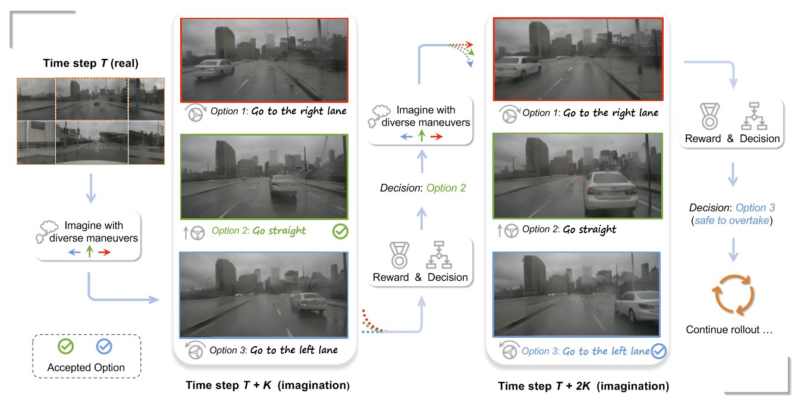
図1：世界モデルによるマルチビュー視覚予測と計画。時刻ステップ \(T\) において、世界モデルは \(T+K\) における複数の未来を想像し、\(T\) では直進を続けるのが安全であると判断する。次にモデルは、時刻ステップ \(T+2K\) の想像に基づき自車が前方車両に近づきすぎることに気づき、安全に追い越すために左車線へ変更することを決定する。
図中ラベル：Time step T (real)＝時刻ステップ T（実際）、Imagine with diverse maneuvers＝多様な運転操作で想像、Accepted Option＝採用された選択肢、Option 1: Go to the right lane＝選択肢1：右車線へ、Option 2: Go straight＝選択肢2：直進、Option 3: Go to the left lane＝選択肢3：左車線へ、Reward & Decision＝報酬と決定、Decision: Option 2＝決定：選択肢2、Decision: Option 3 (safe to overtake)＝決定：選択肢3（追い越しても安全）、Continue rollout …＝ロールアウトを継続…、Time step T + K (imagination)＝時刻ステップ T + K（想像）、Time step T + 2K (imagination)＝時刻ステップ T + 2K（想像）
自動運転において、将来の事象を事前に予測し、予見可能なリスクを評価することは、自律走行車が自らの行動をよりよく計画し、道路上の安全性と効率を高めることを可能にする。この目的のために、我々は既存のエンドツーエンド計画モデルと互換性を持つ初の運転世界モデルである Drive-WM を提案する。ビュー分解によって実現される空間・時間の同時モデリングにより、本モデルは運転シーンにおける高忠実度のマルチビュー映像を生成する。その強力な生成能力に基づき、我々は世界モデルを安全な運転計画に応用する可能性を初めて示す。特に、Drive-WM は異なる運転操作に基づいて複数の未来へと運転を進め、画像ベースの報酬に従って最適な軌道を決定することを可能にする。実世界の運転データセットでの評価により、本手法が高品質で一貫性があり制御可能なマルチビュー映像を生成できることが確認され、実世界シミュレーションと安全な計画への可能性が開かれる。
脚注*：同等の貢献。
エンドツーエンド自動運転［29, 30, 54］の登場は、近年ますます注目を集めている。これらの手法はマルチセンサデータを入力とし、単一の統合モデルで計画結果を直接出力するため、すべてのモジュールの同時最適化が可能である。しかし、エキスパートの運転軌道のみで学習されたエンドツーエンドのプランナーが、分布外（OOD）のケースに直面したときに十分な汎化能力を持つかどうかは疑問である。図2に示すように、自車の位置が中心線から横方向にずれると、エンドツーエンドのプランナーは妥当な軌道を生成するのに苦労する。この問題を緩和するために、我々は意思決定の前にプランナーの性能劣化を予見できる予測モデルを開発することで、自動運転の安全性を向上させることを提案する。世界モデル［19, 20, 35］として知られるこのモデルは、現在の状態と自車の行動に基づいて将来の状態を予測するよう設計されている。実際の意思決定の前に未来を視覚的に思い描き、異なる未来からフィードバックを得ることで、より合理的な計画を提供でき、エンドツーエンド自動運転の汎化性と安全性を高めることができる。
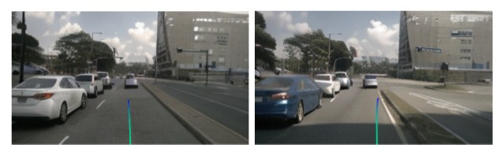
（a）自車が中心線上にある場合の計画 （b）自車が中心線から外れた場合の計画
図2：自車が中心線からわずかにずれるだけで、モーションプランナーは妥当な軌道の生成に苦労する。自車の位置を右に 0.5m ずらして領域外のケースを作成した。（a）は通常のデータにおける VAD［30］手法の妥当な軌道予測を示し、（b）は分布外のケースに遭遇したときの不合理な軌道を示す。
しかし、ゲームシミュレーション［19–21, 46］や実験室のロボット環境［12, 20］での成功例があるにもかかわらず、既存のエンドツーエンド自動運転モデルと互換性のある高品質な世界モデルを学習することは困難である。具体的には、主に 3 つの課題がある。（1）運転世界モデルは高解像度のピクセル空間でのモデリングを必要とする。従来の低解像度画像［20］やベクトル化された状態空間［4］の手法では、実世界における多数の細粒度の事象やベクトル化できない事象を効果的に表現できない。さらに、ベクトル空間の世界モデルは追加のベクトルアノテーションを必要とし、知覚モデルの状態推定ノイズの影響を受ける。（2）マルチビューで一貫した映像を生成することは難しい。先行研究および同時期の研究は単一視点の映像［28, 31, 63］あるいはマルチビュー画像の生成［17, 53, 69］に限られており、自動運転に必要な包括的な環境観測のためのマルチビュー映像生成は未解決の問題として残されている。（3）天候や照明の変化、自車の行動、道路・障害物・車両のレイアウトといった多様な異種の条件に柔軟に対応することは困難である。
これらの課題に対処するため、我々は Drive-WM を提案する。潜在ビデオ拡散モデル［2, 13, 48, 73］に着想を得て、複数のビューとフレームを同時に生成するためのマルチビューモデリングと時間モデリングを導入する。マルチビューの一貫性をさらに高めるために、同時モデリングを分解し、隣接するビューを条件として中間のビューを予測することを提案する。これによりビュー間の一貫性が大幅に向上する。また、画像、テキスト、3D レイアウト、行動などの異種の条件を柔軟に利用できる、シンプルかつ効果的な統一条件インターフェースを導入し、条件付き生成を大幅に簡素化する。最後に、マルチビュー世界モデルを基盤として、図1に示すように、自動運転の安全性を高めるエンドツーエンド計画への応用を探る。本研究の主な貢献は次のようにまとめられる。
映像生成は、現実的な映像サンプルを生成することを目的とする。これまでに、VAE ベース（変分オートエンコーダ）［16, 33, 58, 61］、GAN ベース（敵対的生成ネットワーク）［3, 15, 31, 49, 56, 70］、フローベース［10, 34］、自己回帰モデル［18, 64, 68］など、さまざまな生成手法が提案されてきた。特に、画像生成の分野における拡散ベースモデル［40, 44, 45］の近年の成功により、拡散モデルを映像生成の分野に応用することへの関心が高まっている［23, 26］。拡散ベースの手法は、写実性、制御性、時間的一貫性の面で大幅な向上をもたらした。テキスト条件付き映像生成は、その制御可能な生成のためにより多くの注目を集めており、多数の手法が登場している［2, 25, 48, 66, 73］。
映像予測は生成の特殊な形態とみなすことができ、過去の観測を利用して将来のフレームを予測する［1, 9, 22, 26, 41, 59, 60, 65］。特に自動運転では、DriveGAN［31］が車両の制御信号を入力として運転シナリオをシミュレートすることを学習する。GAIA-1［28］と DriveDreamer［63］はさらに行動条件付き拡散モデルへと拡張し、生成映像の制御性と写実性を高めている。しかし、これらの先行研究は単眼映像に限られており、3D の周囲環境全体を把握することはできない。我々はマルチビュー映像の生成を先駆けて行い、現在の BEV 知覚モデルや計画モデルとのより良い統合を可能にした。
世界モデル［35］は、世界の汎用的な表現を学習し、一連の行動の結果として生じる将来の世界の状態を予測する。ゲーム［19–21, 43, 47］または実験室環境［12, 14, 67］のいずれかにおける世界モデルの学習は広く研究されてきた。Dreamer［20］は、過去の経験から潜在ダイナミクスモデルを学習し、潜在空間において状態価値と行動を予測する。これは DeepMind Control Suite［55］における困難な視覚制御タスクを扱うことができる。DreamerV2［21］は Dreamer を改良し、Atari ゲームにおいて人間レベルの性能を達成した。DreamerV3［22］はより大きなネットワークを用い、スパースな報酬のもとで Minecraft においてゼロからダイヤモンドを獲得することを学習した。これは長年の課題とみなされていたものである。DayDreamer［67］は Dreamer［20］を実世界の 4 台のロボットのオンライン学習に適用し、ハイパーパラメータを変更することなく移動タスクと操作タスクを解いた。近年、運転シーンにおける世界モデルの学習が注目を集めている。MILE［27］はモデルベースの模倣学習手法を用いて、CARLA［11］においてダイナミクスモデルと運転挙動を同時に学習する。前述の研究は、シミュレータか、よく管理された実験室環境のいずれかに限られている。これに対し、我々の世界モデルは既存のエンドツーエンド運転プランナーと統合でき、実世界のシーンにおける計画性能を向上させることができる。
本節では、まず 3.1 節で複数のビューとフレームを同時にモデリングする方法を示す。次に 3.2 節で同時モデリングを分解することによりマルチビューの一貫性を高める。最後に 3.3 節で、複数の異種の条件を統合するための統一条件インターフェースをどのように構築するかを詳述する。
マルチビューの時系列データを同時にモデリングするため、我々は十分に研究されている画像拡散モデルから出発し、追加の時間層とマルチビュー層を導入することでマルチビュー・時間のシナリオに適応させる。本項では、まず同時モデリングの全体的な定式化を示し、時間層とマルチビュー層について詳述する。
定式化。マルチビュー映像のデータセット \(p_{\text{data}}\) にアクセスできると仮定する。すなわち \(\mathbf{x} \in \mathbb{R}^{T \times K \times 3 \times H \times W}\)、\(\mathbf{x} \sim p_{\text{data}}\) は、高さ \(H\)、幅 \(W\) の \(K\) ビューからなる \(T\) 枚の画像の系列である。エンコードされた映像の潜在表現 \(\mathcal{E}(\mathbf{x}) = \mathbf{z} \in \mathbb{R}^{T \cdot K \times C \times \hat{H} \times \hat{W}}\) が与えられたとき、拡散された入力は \(\mathbf{z}_\tau = \alpha_\tau \mathbf{z} + \sigma_\tau \boldsymbol{\epsilon}\)、\(\boldsymbol{\epsilon} \sim \mathcal{N}(\mathbf{0}, \boldsymbol{I})\) であり、ここで \(\alpha_\tau\) と \(\sigma_\tau\) は拡散時刻ステップ \(\tau\) でパラメータ化されたノイズスケジュールを定める。ノイズ除去モデル \(\mathbf{f}_{\theta,\phi,\psi}\)（空間パラメータ \(\theta\)、時間パラメータ \(\phi\)、マルチビューパラメータ \(\psi\) でパラメータ化される）は、拡散された \(\mathbf{z}_\tau\) を入力として受け取り、次のノイズ除去スコアマッチングの目的関数を最小化することで最適化される。
\[ \mathbb{E}_{\mathbf{z} \sim p_{\text{data}}, \tau \sim p_\tau, \boldsymbol{\epsilon} \sim \mathcal{N}(\mathbf{0}, \boldsymbol{I})} [\| \mathbf{y} - \mathbf{f}_{\theta,\phi,\psi}(\mathbf{z}_\tau; \mathbf{c}, \tau) \|_2^2], \tag{1} \]
ここで \(\mathbf{c}\) は条件であり、ターゲット \(\mathbf{y}\) はランダムノイズ \(\boldsymbol{\epsilon}\) である。\(p_\tau\) は拡散時刻 \(\tau\) 上の一様分布である。
時間エンコーディング層。まず、事前学習済みの画像拡散モデルを時間モデルへと拡張するために時間層を導入する。VideoLDM［2］における確立された手法に従い、時間エンコーディング層は各ブロックの 2D 空間層の後に付加される。空間層は潜在変数 \(\mathbf{z} \in \mathbb{R}^{T \cdot K \times C \times \hat{H} \times \hat{W}}\) をフレームごと・ビューごとにエンコードする。その後、時間次元を取り出すために潜在変数を並べ替え（\(\texttt{(TK)CHW} \rightarrow \texttt{KCTHW}\) と表記）、時空間次元 \(\texttt{THW}\) に 3D 畳み込みを適用する。続いて潜在変数を \(\texttt{(KHW)TC}\) に並べ替え、時間次元に標準的なマルチヘッド自己注意を適用して時間的依存性を強化する。式1の記号 \(\phi\) はこの部分のパラメータを表す。
マルチビューエンコーディング層。複数のビューを同時にモデリングするには、異なるビュー間で情報交換が行われなければならない。そこで、マルチビューエンコーディング層を導入することで、単一ビューの時間モデルをマルチビューの時間モデルへと拡張する。具体的には、ビュー次元を取り出すために潜在変数を \(\texttt{(KHW)TC} \rightarrow \texttt{(THW)KC}\) と並べ替える。次に、式1の \(\psi\) でパラメータ化された自己注意層をビュー次元にわたって適用する。このようなマルチビュー注意機構により、すべてのビューが類似したスタイルと一貫した全体構造を持つことが可能になる。
マルチビュー時間チューニング。強力な画像拡散モデルがあることを踏まえ、時間・マルチビューネットワークをゼロから学習することはしない。代わりに、まず単一ビューの画像データと条件で標準的な画像拡散モデルを学習する。これは式1のパラメータ \(\theta\) に対応する。次にパラメータ \(\theta\) を凍結し、追加の時間層（\(\phi\)）とマルチビュー層（\(\psi\)）を映像データでファインチューニングする。
3.1 節の同時分布によって異なるビュー間で類似したスタイルを得ることはできるが、それらの重なり領域における厳密な一貫性を保証することは難しい。本項では、マルチビューの一貫性を高めるために分布の分解を導入する。まず分解の定式化を示し、次にそれが前述の同時モデリングとどのように連携するかを説明する。
定式化。\(\mathbf{x}_i\) を \(i\) 番目のビューのサンプルとすると、3.1 節は本質的に同時分布 \(p(\mathbf{x}_{1,\ldots,K})\) をモデリングしており、これは次のように分解できる。
\[ p(\mathbf{x}_{1,\ldots,K}) = p(\mathbf{x}_1) p(\mathbf{x}_2 | \mathbf{x}_1) \ldots p(\mathbf{x}_K | \mathbf{x}_1, \ldots, \mathbf{x}_{K-1}). \tag{2} \]
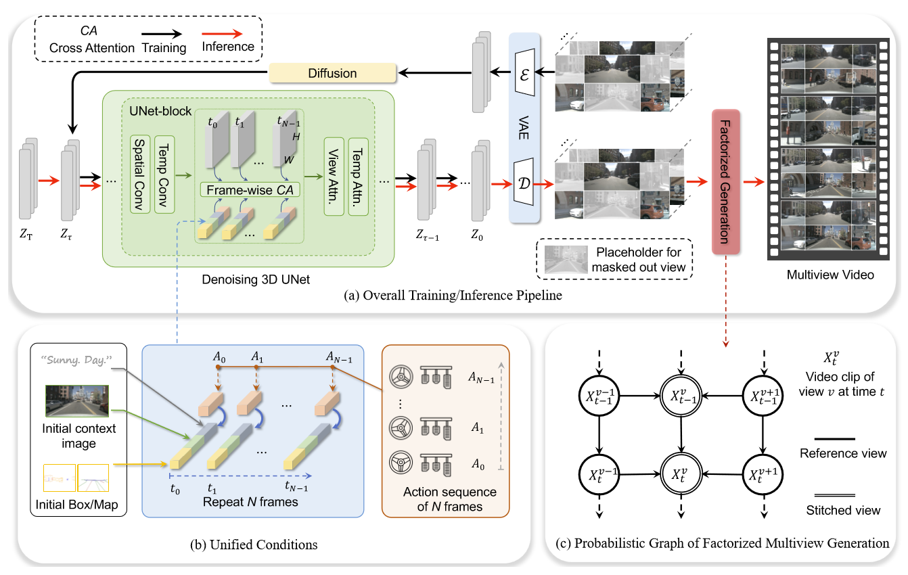
図3：提案フレームワークの概要。（a）は提案手法の学習および推論のパイプラインを示す。（b）はマルチビュー映像の生成を制御するために利用される統一条件を可視化したものである。（c）は分解されたマルチビュー生成の確率的グラフを表す。これは（a）の 3 ビューの出力を入力として他のビューを生成し、マルチビューの一貫性を高める。
図中ラベル：CA / Cross Attention＝CA／クロス注意、Training＝学習、Inference＝推論、Diffusion＝拡散、UNet-block＝UNet ブロック、Spatial Conv＝空間畳み込み、Temp Conv＝時間畳み込み、Frame-wise CA＝フレームごとのクロス注意、View Attn.＝ビュー注意、Temp Attn.＝時間注意、Denoising 3D UNet＝ノイズ除去 3D UNet、Placeholder for masked out view＝マスクされたビューのプレースホルダ、Factorized Generation＝分解生成、Multiview Video＝マルチビュー映像、(a) Overall Training/Inference Pipeline＝（a）学習／推論パイプライン全体、"Sunny. Day."＝「晴れ。昼。」、Initial context image＝初期コンテキスト画像、Initial Box/Map＝初期ボックス／マップ、Repeat N frames＝N フレーム分繰り返す、Action sequence of N frames＝N フレームの行動系列、(b) Unified Conditions＝（b）統一条件、Video clip of view v at time t＝時刻 t におけるビュー v の映像クリップ、Reference view＝参照ビュー、Stitched view＝ステッチビュー、(c) Probabilistic Graph of Factorized Multiview Generation＝（c）分解マルチビュー生成の確率的グラフ
式2は、異なるビューが自己回帰的に生成されること、すなわち新しいビューが既存のビューを条件として生成されることを示している。これらの条件付き分布は、新しいビューが既存のビューの内容を把握しているため、より良いビュー一貫性を保証できる。しかし、このような自己回帰的生成は非効率であり、こうした完全な分解は実際には実行不可能である。
式2のモデリングを簡素化するため、すべてのビューを 2 種類に分割する。すなわち参照ビュー \(\mathbf{x}_r\) とステッチビュー \(\mathbf{x}_s\) である。例えば nuScenes では、参照ビューを \(\{\texttt{F, BL, BR}\}\)2、ステッチビューを \(\{\texttt{FL, B, FR}\}\) とすることができる。「ステッチ（つなぎ合わせ）」という用語を使うのは、ステッチビューが隣接する 2 つの参照ビューから「つなぎ合わされた」ように見えるためである。同じ種類に属するビューは互いに重ならないが、異なる種類のビュー同士は重なり得る。このことから、まず参照ビューの同時分布をモデリングするという着想を得た。ここで、重ならない参照ビューは厳密な一貫性を必要としないため、同時モデリングが有効である。次に、\(\mathbf{x}_s\) の分布を \(\mathbf{x}_r\) を条件とする条件付き分布としてモデリングする。図4は nuScenes におけるマルチビュー分解の基本概念を示している。この意味で、式2を次のように簡略化する。
脚注2：F：前（front）、B：後（back）、L：左（left）、R：右（right）。
\[ p(\mathbf{x}) = p(\mathbf{x}_s, \mathbf{x}_r) = p(\mathbf{x}_r) p(\mathbf{x}_s | \mathbf{x}_r). \tag{3} \]
時間的な首尾一貫性を考慮し、過去のフレームを追加の条件として組み込む。式3は次のように書き直せる。
\[ p(\mathbf{x}) = p(\mathbf{x}_s, \mathbf{x}_r | \mathbf{x}_{pre}) = p(\mathbf{x}_r | \mathbf{x}_{pre}) p(\mathbf{x}_s | \mathbf{x}_r, \mathbf{x}_{pre}), \tag{4} \]
ここで \(\mathbf{x}_{pre}\) は、以前に生成された映像クリップからのコンテキストフレーム（例えば最後の 2 フレーム）である。参照ビューの分布 \(p(\mathbf{x}_r | \mathbf{x}_{pre})\) は 3.1 節のパイプラインによって実装される。\(p(\mathbf{x}_s | \mathbf{x}_r, \mathbf{x}_{pre})\) については、同様のパイプラインを採用するが、図4に示すように、隣接する参照ビューを追加の条件として組み込む。条件の使い方については次項で説明する。
実世界は非常に複雑であるため、世界モデルは複数の異種の条件を活用する必要がある。本研究では、初期コンテキストフレーム、テキスト記述、自車の行動、3D ボックス、BEV マップ、参照ビューを利用する。制御性をさらに高めるために、より多くの条件を追加で含めることもできる。条件ごとに専用のインターフェースを開発するのは時間がかかり、より多くの条件を取り込むには柔軟性に欠ける。この問題に対処するため、我々は複数の異種の条件を統合するうえでシンプルかつ効果的な統一条件インターフェースを導入する。以下では、まず各条件をどのようにエンコードするかを紹介し、次に統一条件インターフェースについて説明する。
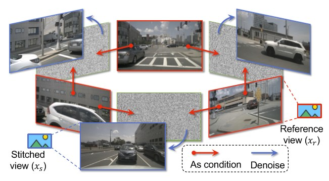
図4：分解マルチビュー生成の説明図。nuScenes のセンサ配置を例としている。
図中ラベル：Stitched view (x_s)＝ステッチビュー（x_s）、Reference view (x_r)＝参照ビュー（x_r）、As condition＝条件として、Denoise＝ノイズ除去
画像条件。初期コンテキストフレーム（すなわちクリップの最初のフレーム）と参照ビューを画像条件として扱う。与えられた画像条件 \(\mathbf{I} \in \mathbb{R}^{3 \times H \times W}\) は、ConvNeXt をエンコーダ［39］として用いてエンコードされ、\(d\) 次元の埋め込みの系列 \(\mathbf{i} = (i_1, i_2, ..., i_n) \in \mathbb{R}^{n \times d}\) へと平坦化される。異なる画像からの埋め込みは、\(n\) の次元（第 1 次元）で連結される。
レイアウト条件。レイアウト条件とは、3D ボックス、HD マップ、BEV セグメンテーションを指す。簡単のため、3D ボックスと HD マップを 2D の透視ビューに投影する。こうすることで、画像条件のエンコーディングと同じ戦略を用いてレイアウト条件をエンコードでき、埋め込みの系列 \(\mathbf{l} = (l_1, l_2, ..., l_k) \in \mathbb{R}^{k \times d}\) が得られる。\(k\) は投影されたレイアウトと BEV セグメンテーションから得られる埋め込みの総数である。
テキスト条件。拡散モデルの慣例に従い、事前学習済みの CLIP［42］をテキストエンコーダとして採用する。具体的には、ビュー情報、天候、明るさを組み合わせてテキスト記述を得る。その埋め込みを \(\mathbf{e} = (e_1, e_2, ..., e_m) \in \mathbb{R}^{m \times d}\) と表す。
行動条件。行動条件は、世界モデルが未来を生成するために不可欠である。既存の計画手法［30］と互換性を持たせるため、ある時刻ステップにおける行動を \((\Delta x, \Delta y)\) と定義する。これは次の時刻ステップへの自車位置の移動量を表す。MLP を用いて行動を \(d\) 次元の埋め込み \(\mathbf{a} \in \mathbb{R}^{2 \times d}\) に写像する。
統一条件インターフェース。ここまでで、すべての条件は \(d\) 次元の特徴空間に写像される。必要な埋め込みを連結したものをノイズ除去 UNet の入力とする。行動に基づく同時映像生成を例にとると、これにより初期コンテキスト画像、初期レイアウト、テキスト記述、フレームごとの行動系列を利用できる。したがって、ある時刻 \(t\) における統一条件埋め込みは次のようになる。
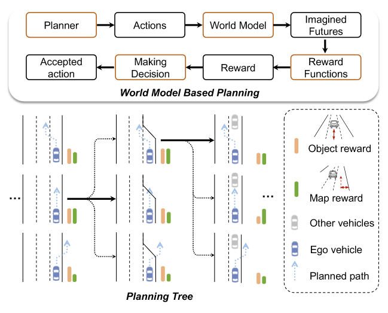
図5：我々の世界モデルを用いたエンドツーエンド計画パイプライン。上部に計画パイプラインの構成要素を示し、下部に画像ベースの報酬を用いた計画木における意思決定プロセスを図示する。
図中ラベル：Planner＝プランナー、Actions＝行動、World Model＝世界モデル、Imagined Futures＝想像された未来、Reward Functions＝報酬関数、Reward＝報酬、Making Decision＝意思決定、Accepted action＝採用された行動、World Model Based Planning＝世界モデルに基づく計画、Planning Tree＝計画木、Object reward＝物体報酬、Map reward＝マップ報酬、Other vehicles＝他車両、Ego vehicle＝自車、Planned path＝計画経路
\[ \mathbf{c}_t = [\mathbf{i}_0, \mathbf{l}_0, \mathbf{e}_0, \mathbf{a}_t] \in \mathbb{R}^{(n+k+m+2) \times d}, \tag{5} \]
ここで添え字 \(t\) は \(t\) 番目の生成フレームを表し、添え字 0 は現在の実フレームを表す。このような異なる条件の組み合わせは統一されたインターフェースを提供し、要求に応じて調整できることを強調しておく。最後に、\(\mathbf{c_t}\) は 3D UNet において、フレームごとのクロス注意によって潜在変数 \(\mathbf{z_t}\) と相互作用する（図3（a））。
結果を予測せずに盲目的に行動を計画することは危険である。我々の世界モデルを活用することで、起こり得る未来を包括的に評価でき、より安全な計画が可能になる。本節では、未開拓の領域である、自動運転のための世界モデルを用いたエンドツーエンド計画を探求する。
本節では世界モデルを用いた計画について述べる。各時刻ステップにおいて、世界モデルを利用して、プランナーからサンプリングされた軌道候補に対する将来シナリオの予測を生成し、画像ベースの報酬関数を用いてその未来を評価し、最適な軌道を選択して計画木を拡張する。
図5に示すように、計画木を時間とともに発展する予測された自車軌道の系列として定義する。各時刻において、カメラによって実際のマルチビュー画像を取得できる。事前学習済みのプランナーは実際のマルチビュー画像を入力として受け取り、起こり得る軌道候補をサンプリングする。主流のプランナーの入力と互換性を持たせるため、各軌道について時刻 \(t\) における行動 \(\mathbf{a_t}\) を \((x_{t+1} - x_t, y_{t+1} - y_t)\) と定義する。ここで \(x_t\) と \(y_t\) は時刻 \(t\) における自車位置である。行動が与えられると、映像生成には式5の条件の組み合わせを採用する。生成後、画像ベースの報酬関数を利用して最適な軌道を決定として選択する。このような生成と決定のプロセスを繰り返すことで、木ベースのロールアウトを形成できる。
計画された軌道について将来の映像を生成した後、複数の未来の健全性を評価するために報酬関数が必要となる。
まず、知覚結果から報酬を得る。具体的には、画像ベースの 3D 物体検出器［37］とオンライン HD マップ予測器［38］を用いて、生成された映像に対する知覚結果を得る。次に、従来のプランナー［6, 30］に着想を得て、マップ報酬と物体報酬を定義する。マップ報酬は 2 つの要素を含む。1 つは縁石からの距離であり、自車が正しい走行可能領域に留まるよう促す。もう 1 つは中心線との整合性であり、自車が頻繁に車線変更したり横方向に車線から逸脱したりすることを防ぐ。物体報酬は、縦方向および横方向における他の道路利用者からの距離を意味する。この報酬は自車と他の道路利用者との衝突を回避する。総報酬は物体報酬とマップ報酬の積として定義される。最終的に、報酬が最大となる自車の予測を選択する。その後、計画木は次のタイムスタンプへと進み、後続の軌道を反復的に計画する。
提案する世界モデルはピクセル空間で動作するため、ベクトル化されていない表現からも報酬を得ることができ、より一般的なケースを扱える。例えば、スプリンクラーから散布される水や損傷した路面は、教師あり知覚モデルではベクトル化することが難しいが、大量のラベルなしデータから学習された世界モデルはそのようなケースをピクセル空間で生成できる。GPT-4V のような近年の強力な基盤モデルを活用することで、計画プロセスはベクトル化されていない表現からより包括的な報酬を得ることができる。付録では、いくつかの典型的な例を示す。
データセット。実験には nuScenes［5］データセットを採用する。これは 3D 知覚と計画のための最も広く使われているデータセットの 1 つである。合計 700 本の学習用映像と 150 本の検証用映像から構成される。各映像は 6 台のサラウンドビューカメラで撮影された約 20 秒の映像を含む。
学習方式。元画像を 1600 × 900 から 384 × 192 にクロップおよびリサイズする。モデルは Stable Diffusion のチェックポイント［44］で初期化する。すべての実験は A40（48GB）GPU で実施する。詳細については付録を参照されたい。
品質評価。生成された映像の品質を評価するため、FID（Frechet Inception Distance）［24］と FVD（Frechet Video Distance）［57］を主要な指標として用いる。
マルチビュー一貫性評価。マルチビューの一貫性を評価するため、新しい指標としてキーポイントマッチング（KPM）スコアを導入した。この指標は、事前学習済みのマッチングモデル［51］を利用してマッチしたキーポイントの平均数を計算し、それによって KPM スコアを定量化する。計算過程では、各画像について、まず現在のビューとその 2 つの隣接ビューとの間でマッチしたキーポイントの数を計算する。続いて、生成データにおけるマッチ点の数と実データにおけるマッチ点の数との比を計算する。最後に、生成されたすべての画像にわたってこれらの比を平均し、KPM スコアを得る。実際には、検証セットの各シーンから 8 フレームを均等に選択して KPM を計算した。
制御性評価。映像コンテンツ生成の制御性を評価するため、事前学習済みの知覚モデルを用いて生成画像を評価する。先行手法［69］に従い、前景および背景のセグメンテーションには CVT［72］を採用した。さらに、3D 物体検出［62］とオンラインマップ構築［38］も評価する。
計画評価。エンドツーエンド計画については、オープンループ評価指標［29, 30］に従い、GT 軌道からの L2 距離と物体衝突率を用いる。
モデルのバリエーション。行動ベースの映像生成とレイアウトベースの映像生成をサポートする。前者は各フレームの自車の行動を条件として与え、後者は各フレームのレイアウト（3D ボックス、マップ情報）を与える。
まず、本手法の優れた生成品質と制御性を示す。ここでの生成はフレームごとの 3D レイアウトを条件とする。モデルは nuScenes の train 分割で学習し、val 分割の条件で評価する。
生成品質。我々はマルチビュー映像生成を初めて探求するため、マルチビュー画像と単一ビュー映像のそれぞれについて先行手法と個別に比較する。マルチビュー画像生成については、3.1 節の時間層を取り除く。表1a に主要な結果を示す。単一ビュー画像生成では 12.99 の FID を達成し、先行手法に対して大幅な改善を達成した。映像生成については、本手法は過去の単一ビュー映像生成手法と比較して大幅な品質向上を示し、15.8 の FID と 122.7 の FVD を達成した。さらに、本手法は一貫性のあるマルチビュー映像を生成した初めての研究であり、これは 5.3 節で定量的に示される。
制御性。表1b では、nuScenes 検証セットにおける本手法の制御性を検証する。前景の制御性については、生成されたマルチビュー映像に対する 3D 物体検出の性能を評価し、\(\text{mAP}_{\text{obj}}\) を報告する。さらに、BEV レイアウト上で前景をセグメンテーションし、\(\text{mIoU}_{\text{fg}}\) を報告する。背景の制御については、道路セグメンテーションの mIoU を報告する。さらに、HD マップの性能として \(\text{mAP}_{\text{map}}\) を評価する。この優れた制御性は、統一条件インターフェース（3.3 節）の有効性を浮き彫りにし、ニューラルシミュレータとしての世界モデルの可能性を示している。
| 手法 | マルチビュー | 映像 | FID↓ | FVD↓ |
|---|---|---|---|---|
| BEVGen［53］ | ✓ | 25.54 | - | |
| BEVControl［69］ | ✓ | 24.85 | - | |
| MagicDrive［17］ | ✓ | 16.20 | - | |
| Ours（本手法） | ✓ | 12.99 | - | |
| DriveGAN［31］ | ✓ | 73.4 | 502.3 | |
| DriveDreamer［63］ | ✓ | 52.6 | 452.0 | |
| Ours（本手法） | ✓ | ✓ | 15.8 | 122.7 |
（a）生成品質。
| 手法 | \(\text{mAP}_{\text{obj}}\)↑ | \(\text{mAP}_{\text{map}}\)↑ | \(\text{mIoU}_{\text{fg}}\)↑ | \(\text{mIoU}_{\text{bg}}\)↑ |
|---|---|---|---|---|
| GT | 37.78 | 59.30 | 36.08 | 72.36 |
| BEVGen［53］ | - | - | 5.89 | 50.20 |
| LayoutDiffusion［71］ | 3.68 | - | 15.51 | 35.31 |
| GLIGEN［36］ | 15.42 | - | 22.02 | 38.12 |
| BEVControl［69］ | 19.64 | - | 26.80 | 60.80 |
| MagicDrive［17］ | 12.30 | - | 27.01 | 61.05 |
| Ours（本手法） | 20.66 | 37.68 | 27.19 | 65.07 |
（b）生成の制御性。
表1：nuScenes におけるマルチビュー映像生成の性能。各タスクについて、nuScenes 学習セットで学習した対応するモデルをテストする。我々の Drive-WM は、品質と制御性の両方の評価において他のすべての手法を上回る。
（訳注：本文では表1a の 12.99 を「単一ビュー画像生成」の結果と述べているが、表ではマルチビュー画像生成の行に記載されており、本文の「single-view」は「multi-view」の誤りと思われる。）
| 時間埋め込み | レイアウト条件 | FID↓ | FVD↓ | KPM(%)↑ |
|---|---|---|---|---|
| ✓ | 20.3 | 212.5 | 31.5 | |
| ✓ | 18.9 | 153.8 | 44.6 | |
| ✓ | ✓ | 15.8 | 122.7 | 45.8 |
（a）統一条件のアブレーション。
| 時間層 | ビュー層 | FID↓ | FVD↓ | KPM(%)↑ |
|---|---|---|---|---|
| 23.3 | 228.5 | 40.8 | ||
| ✓ | 16.2 | 127.1 | 40.9 | |
| ✓ | ✓ | 15.8 | 122.7 | 45.8 |
（b）マルチビュー時間チューニングのアブレーション。
| 手法 | KPM(%)↑ | FVD↓ | FID↓ |
|---|---|---|---|
| Joint Modeling（同時モデリング） | 45.8 | 122.7 | 15.8 |
| Factorized Generation（分解生成） | 94.4 | 116.6 | 16.4 |
（c）分解生成のアブレーション。
表2：モデル設計における構成要素のアブレーション。実験は nuScenes 検証セットにおいて、レイアウトベースの映像生成（5.1 節のモデルのバリエーションを参照）の設定で行った。
設計上の決定の有効性を検証するため、表2に示すように、モデルの主要な特徴についてアブレーション研究を行う。実験はレイアウトベースの映像生成の設定で行う。
統一条件。表2a から、レイアウト条件がモデルの能力に大きな影響を与え、生成映像の品質と一貫性の両方を向上させることがわかる。さらに、時間埋め込みは生成映像の品質を高めることができる。
モデル設計。表2b では、マルチビュー時間チューニングにおける時間層とビュー層の役割を探る。実験は、時間層とビュー層が（訳注：原文はこの文が途中で途切れている）。分解（3.2 節）なしでマルチビュー層を単純に採用するだけでは、KPM はわずかに向上するにとどまる。
分解マルチビュー生成。表2c に示すように、分解生成は同時モデリングと比べて複数ビュー間の一貫性を顕著に向上させ、45.8% から 94.4% へと増加させる。この向上は、画像と映像の両方の品質を確保しながら達成されている。定性的な結果を図6に示す。
本項では、自動運転に関する近年の研究では十分に探求されていない、エンドツーエンド計画における世界モデルの応用を探る。我々の試みは 2 つの側面からなる。（1）まず、生成された未来を評価することが計画に役立つことを示す。（2）次に、世界モデルを活用して一部の領域外ケースにおける計画を改善できることを示す。
| 手法 | L2 (m)↓ | Collision（衝突率）(%)↓ | ||||||
|---|---|---|---|---|---|---|---|---|
| 1s | 2s | 3s | Avg. | 1s | 2s | 3s | Avg. | |
| VAD (GT cmd) | 0.41 | 0.70 | 1.05 | 0.72 | 0.07 | 0.17 | 0.41 | 0.22 |
| VAD (rand cmd) | 0.51 | 0.97 | 1.57 | 1.02 | 0.34 | 0.74 | 1.72 | 0.93 |
| Ours（本手法） | 0.43 | 0.77 | 1.20 | 0.80 | 0.10 | 0.21 | 0.48 | 0.26 |
表3：nuScenes における計画性能。正解の運転コマンドを用いる代わりに、我々の木ベースの計画を用いて 3 つのコマンドの中から最良のものを選択する。
| マップ報酬 | 物体報酬 | L2 (m)↓ | Collision（衝突率）(%)↓ | ||||||
|---|---|---|---|---|---|---|---|---|---|
| 1s | 2s | 3s | Avg. | 1s | 2s | 3s | Avg. | ||
| 0.51 | 0.97 | 1.57 | 1.02 | 0.34 | 0.74 | 1.72 | 0.93 | ||
| ✓ | 0.45 | 0.82 | 1.29 | 0.85 | 0.12 | 0.33 | 0.72 | 0.39 | |
| ✓ | 0.43 | 0.77 | 1.20 | 0.80 | 0.12 | 0.21 | 0.48 | 0.27 | |
| ✓ | ✓ | 0.43 | 0.77 | 1.20 | 0.80 | 0.10 | 0.21 | 0.48 | 0.26 |
表4：画像ベースの報酬関数の設計。2 つのサブ報酬、すなわちマップ報酬と物体報酬を用いる。
木ベースの計画。我々の木ベースの計画の性能を示すための実験を行う。正解の運転コマンドを用いる代わりに、「直進（Go straight）」「左折（Turn left）」「右折（Turn right）」の 3 つのコマンドに従って VAD から計画軌道をサンプリングする。次に、サンプリングされた行動を我々の木ベースの計画（4 節）に用いる。表3に示すように、我々の木ベースのプランナーはランダムな運転コマンドを上回り、さらには GT コマンドに近い性能を達成する。加えて、表4では採用した 2 つの報酬についてアブレーションを行い、その結果は、特に物体衝突の指標において、組み合わせた報酬が各サブ報酬を上回ることを示している。
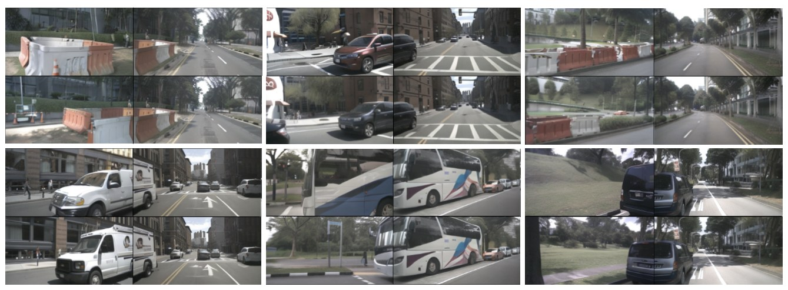
図6：分解マルチビュー生成の定性的結果。比較する各ペアについて、上段は分解なしで生成したもの、下段は分解ありで生成したものである。
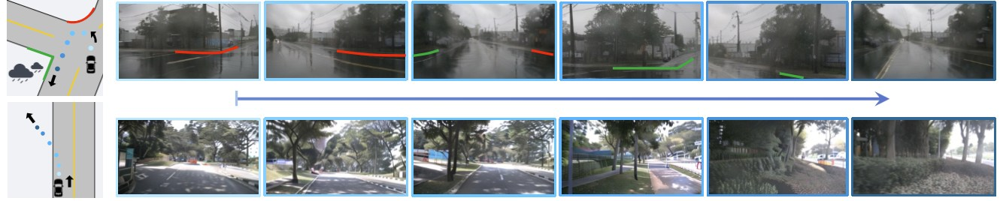
図7：反実仮想イベントの生成。上：雨の日に T 字路で U ターンする場面。我々の学習セットには U ターンのサンプルが一切含まれていないことに注意されたい。下：走行不可能な領域に乗り上げる場面。
| OOD | 世界モデルによる f.t. | L2 (m)↓ | Collision（衝突率）(%)↓ | ||||||
|---|---|---|---|---|---|---|---|---|---|
| 1s | 2s | 3s | Avg. | 1s | 2s | 3s | Avg. | ||
| 0.41 | 0.70 | 1.05 | 0.72 | 0.07 | 0.17 | 0.41 | 0.22 | ||
| ✓ | 0.73 | 0.99 | 1.33 | 1.02 | 1.25 | 1.62 | 1.91 | 1.59 | |
| ✓ | ✓ | 0.50 | 0.79 | 1.17 | 0.82 | 0.72 | 0.84 | 1.16 | 0.91 |
表5：領域外での計画。自車から横方向に 0.5 メートルずれた位置を OOD 位置と定義する。
（訳注：f.t. はファインチューニング（fine-tuning）の略。）
OOD な自車のずれからの回復。我々の世界モデルを用いることで、領域外の自車位置をピクセル空間でシミュレートできる。具体的には、図2の右のように、自車位置を横方向に 0.5 メートルずらす。この状況では、表5に示すように、既存のエンドツーエンドプランナー VAD［30］の性能は大幅に低下する。この問題を緩和するため、自車が車線に戻る軌道を教師として、生成映像を用いてプランナーをファインチューニングする。これらの OOD データから学習することで、プランナーの性能は改善し、通常のレベルに近づく。
初期観測と行動が与えられると、我々の Drive-WM は、U ターンや走行不可能な領域への乗り上げ（図7）など、学習データとは大きく異なる反実仮想イベントを生成できる。このような反実仮想データを生成できる能力は、我々の Drive-WM が領域外のケースを予見し対処する可能性を持つことを改めて示している。
我々は、自動運転のための初のマルチビュー世界モデルである Drive-WM を提案した。本手法は、テキスト記述、レイアウト、あるいは自車の行動からの情報を活用して映像生成を制御し、多様な条件のもとで高品質かつ一貫性のあるマルチビュー映像を生成する能力を示す。導入した分解生成は、さまざまなビュー間の空間的一貫性を大幅に向上させる。さらに、nuScenes データセットでの大規模な実験により、本手法が計画の全体的な健全性と分布外状況における頑健性を向上させ得ることが示された。
参考文献は原文のまま掲載した。
Driving into the Future: Multiview Visual Forecasting and Planning with World Model for Autonomous Driving
補足資料（Supplementary Material）
本節では、我々のモデルの性能を示す定性的な例を提示する。我々のモデルが生成した映像結果の全体については、匿名化されたプロジェクトページ https://drive-wm.github.io を参照されたい。
図8に示すように、Drive-WM はプランナーからの運転操作に応じて多様な将来の結果を予測できる。VAD［30］からの計画に基づき、Drive-WM は初期観測と整合する複数のもっともらしい未来を予測する。映像サンプルは nuScenes［5］検証セットで生成する。図8の各行は、左への車線変更または現在の車線の維持（1 行目）、路肩へ向かう走行と直進（2 行目）、交差点での左折・右折（3 行目）について予測された未来を示している。
Drive-WM は、時間的なレイアウトを条件とするマルチビュー映像生成器として機能できる。これにより、Drive-WM をニューラルシミュレータとして応用することが可能になる。nuScenes［5］の train セットで学習されているにもかかわらず、Drive-WM は val セットにおいて物体、動き、シーンの新たな組み合わせを生成することで創造性を発揮する。
通常シーンの生成。図9に nuScenes［5］検証セットについて示すように、Drive-WM はレイアウト条件に基づいて多様なマルチビュー映像の予測を生成できる。
まれなシーンの生成。図10に示すように、学習中に触れる機会が限られているにもかかわらず、夜間や雨天といったまれな運転条件に対しても高品質な映像を生成できる。これは、学習データの分布で支配的な日中のシナリオを超えて、モデルが効果的に汎化できることを示している。
Drive-WM は、さまざまな形式の制御による条件付き生成を可能にする。例えば、全体の天候や明るさを変更するためのテキストプロンプト、運転操作を変更するための自車の行動、前景レイアウトを変更するための 3D ボックスなどである。本節では、ユーザ指定の条件に基づく対話的な映像生成のための、Drive-WM の柔軟な制御メカニズムを示す。
天候と明るさの変更。図11と図12に示すように、同じシーンレイアウト（道路構造と前景物体）を維持したまま、天候や明るさの条件を変更する我々のモデルの能力を示す。映像例は nuScene の val セットのレイアウト条件に基づいて生成されている。この能力は、将来のデータ拡張に大きな可能性を持つ。さまざまな天候や明るさの条件のもとで多様なシーンを生成することで、我々のモデルは学習データセットを大幅に拡張でき、それによってモデルの汎化性能と頑健性を向上させることができる。
行動の制御。我々のモデルは、与えられた自車の行動信号と整合した高品質なストリートビューを生成できる。例えば、図14に示すように、我々のモデルは入力された操舵信号に従って、同じ初期フレームから左折と右折の映像を正しく生成する。図15では、我々のモデルは加速信号と減速信号の両方に従って周囲の車両の位置を予測することに成功している。これらの定性的結果は、我々の世界モデルの高い制御性を示している。
前景の制御。図13が示すように、Drive-WM は生成映像において前景レイアウトのきめ細かな制御を可能にする。横方向および縦方向の条件を変更することで、指定されたレイアウトの変化に対応した高忠実度の画像が生成される。
歩行者の生成は、ストリートビュー合成手法にとって課題となる。しかし、先行研究［53, 69］とは異なり、図16は Drive-WM が歩行者を効果的に生成できることを示している。最初の 6 枚の画像は歩行者が横断するのを待つ車両を示し、次の 6 枚の画像はバス停で待つ歩行者を示している。これは、詳細なマルチエージェント間の相互作用を生成する我々のモデルの可能性を示している。
既存のエンドツーエンドプランナーは、車線中央に沿ったエキスパートの軌道で学習されている。図2が示すように、このことは中央から外れたずれに対する生成を困難にしており、これは行動クローニングにおける「探索の欠如（lack-of-exploration）」問題として知られている［8］。Drive-WM をシミュレーションに用いて、図18は車線中央から逸脱した計画軌道をさらに示す。これらの生成された分布外のケースで評価すると、［30］のプランナーは回復できないことがわかる。このことは、コーナーケースを探索し頑健性を向上させるうえでの Drive-WM の有用性を浮き彫りにしている。
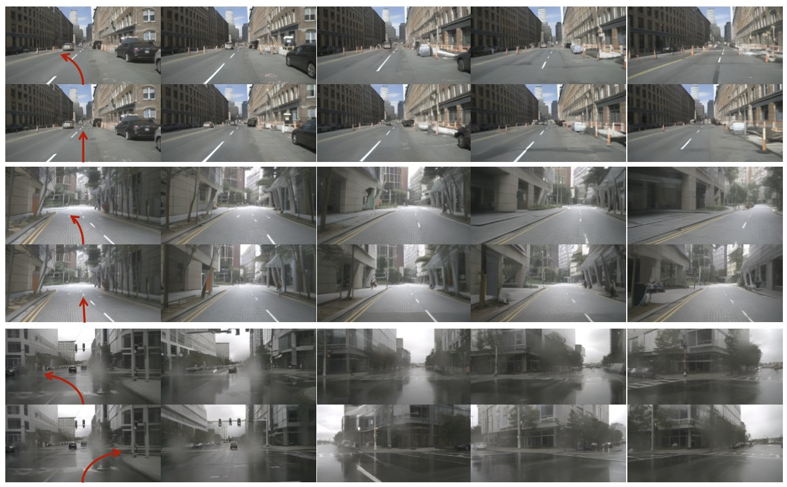
図8：計画に基づく複数のもっともらしい未来の生成。ここでは見やすさのため前方ビューの映像のみを示す。映像サンプルは nuScenes val セットの最初のフレームに基づいて生成されている。1 行目では、左への車線変更と直進の例を示す。2 行目では、路肩へ向かう走行と直進のケースを示す。最後の行では、交差点で左折と右折を行う例を示す。
異なる計画のもとで予測された異なる未来の安全性を評価するため、近年の GPT-4V モデルを評価器として活用する。具体的には、Drive-WM を用いて、さまざまな道路状況やエージェントの挙動を伴う多様な将来の運転映像を合成する。次に GPT-4V を用いてこれらのシミュレーション映像を分析し、運転の安全性の観点から総合的な報酬を与える。図17に示すように、これは道路前方に水たまりがあるときに GPT-4V が計画するさまざまな運転挙動を示している。ベクトル化された入力を用いる報酬関数と比べて、GPT-4V は Drive-WM の映像における危険な状況について、より汎化された理解を提供する。将来シナリオの評価に GPT-4V のマルチモーダル推論能力を活用することで、直接表現されてはいないがより広いシーン理解を通じて推論されるリスクを特定する、強化された評価が可能になる。これは、Drive-WM のような生成的な世界モデルと GPT-4V のような報酬生成モデルを組み合わせることの価値を示している。GPT-4V を用いて Drive-WM の予測を批評することで、より頑健なフィードバックが得られ、最終的には多様な実世界の条件下で自動運転の安全性を向上させることができる。
Waymo Open Dataset。Drive-WM の幅広い適用性を示すため、Waymo Open Dataset において 768×512 の高解像度画像の生成に適用する。図19と図20に見られるように、Drive-WM は nuScenes と同じハイパーパラメータで、この解像度において現実的かつ多様な運転予測を生成する。新しいデータセットと解像度に効果的に汎化することで、これらの Waymo の例は、Drive-WM がさまざまな運転データセットにわたる高忠実度の映像合成に対して広く適応可能なアプローチを提供することを裏付けている。
本節では、マルチビュー同時映像モデルと分解モデルの学習および推論の詳細を紹介する。
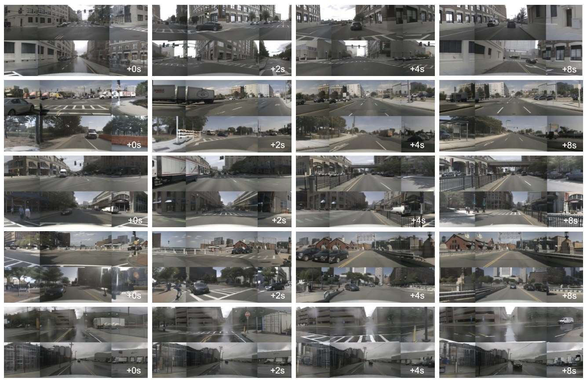
図9：多様なマルチビュー映像の条件付き生成。nuScenes val セットのレイアウト条件（3D ボックス、HD マップ、BEV セグメンテーション）が与えられると、我々のモデルは時空間的に一貫したマルチビュー映像を生成できる。
図中ラベル：+0s, +2s, +4s, +8s＝開始時点からの経過時間（0 秒後、2 秒後、4 秒後、8 秒後）
学習の詳細。nuScenes の元画像の解像度は 1600 × 900 である。まず上部の領域を除去して 1600 × 800 にクロップし、その後モデルの学習のために 384 × 192 にリサイズする。VideoLDM［2］と同様に、まず条件付き画像潜在拡散モデルを学習する。このモデルは、HD マップ、BEV セグメンテーション、3D バウンディングボックス、テキスト記述などのさまざまなシーン要素を条件とする。すべての条件はトークン長の次元で連結される。画像モデルは Stable Diffusion のチェックポイント［44］で初期化される。この条件付き画像モデルは、合計バッチサイズ 768 で 60,000 イテレーション学習される。学習率 \(1 \times 10^{-4}\) の AdamW オプティマイザを用いる。続いて、時間パラメータとマルチビューパラメータ（3.1 節）を導入してマルチビュー映像モデルを構築し、このモデルをバッチサイズ 32、映像フレーム長 \(T = 8\) で 40,000 イテレーションファインチューニングする。行動ベースの映像生成では、違いは各フレームの条件情報の変更のみにあり、残りの学習とモデル構造は同じである。映像モデルには学習率 \(5 \times 10^{-5}\) の AdamW オプティマイザ［32］を用いる。モデルからのサンプリングには、一般にノイズ除去拡散暗黙モデル（DDIM）［50］のサンプラーを用いる。分類器なしガイダンス（CFG）は条件付きガイダンスの効果を強化する。各条件について、学習中に 20% の確率でランダムにドロップする。すべての実験は A40 GPU で実施する。
推論の詳細。推論時には、サンプリングステップ数を 50 とし、確率性 \(\eta\)=1.0、CFG=5.0 を用いる。映像生成では、最初のフレームを条件として後続の映像内容を生成する。VideoLDM［2］と同様に、長い映像の生成には、生成されたフレームを後続の条件として用いる。
分解の学習の実装。実装は全体として B.1 節の同時モデリングの実装と同様である。分解生成では、参照ビューを追加の画像条件として用いる。
nuScenes のデータを例にとると、まず 6 つのマルチビュー映像クリップを時計回りに並べ、\(\mathbf{x}_0\) から \(\mathbf{x}_5\) と表す。次に、学習サンプルを \(\{\mathbf{x}_{(i-1) \bmod 6}, \mathbf{x}_i, \mathbf{x}'_i, \mathbf{x}_{(i+1) \bmod 6}\}\) と定義する。ここで \(\mathbf{x}_i\) は 6 つのビューすべてからランダムにサンプリングされたステッチビューであり、\(\{\mathbf{x}_{(i-1) \bmod 6}, \mathbf{x}_{(i+1) \bmod 6}\}\) は参照ビューのペアである。\(\mathbf{x}'_i\) は \(i\) 番目のビューの以前に生成されたフレームであり、これも追加の画像条件として機能する。学習パイプラインは同時モデリングと非常に似ているが、ここでは各イテレーションで複数のビューではなく単一のビューを生成する。学習サンプル \(\{\mathbf{x}_{(i-1) \bmod 6}, \mathbf{x}_i, \mathbf{x}'_i, \mathbf{x}_{(i+1) \bmod 6}\}\) からわかるように、学習時には単一のステッチビュー \(\mathbf{x}_i\) についてビュー次元 \(N = 1\) となる。
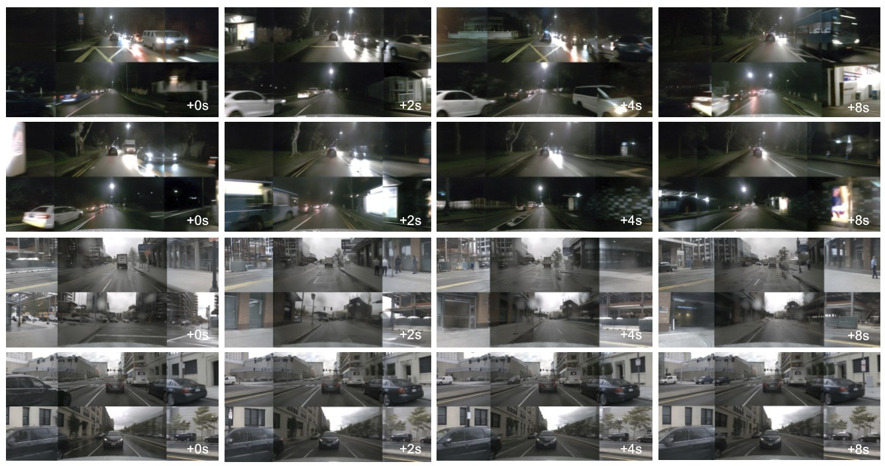
図10：まれなシーンの生成。上の 2 行：夜間のシナリオ。下の 2 行：雨天のシナリオ。
図中ラベル：+0s, +2s, +4s, +8s＝開始時点からの経過時間（0 秒後、2 秒後、4 秒後、8 秒後）
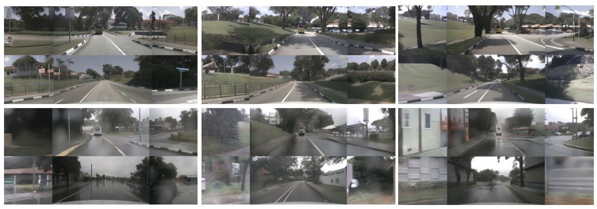
図11：天候変化の生成。上段は晴天の日中のシーンを示す。下段は同じレイアウトを雨天のシーンとして描画したものであり、条件付き生成の能力を示している。
分解の推論。推論時には、いくつかのビューを参照ビューとして事前に定め、これらの参照ビューに対応する映像をまず同時モデルによって生成する。次に、ペアとなる参照映像クリップと以前に生成されたビュー（すなわち \(\mathbf{x}'_i\)）を条件として、ステッチビューの映像を生成する。具体的には、nuScenes では F、BL、BR3 を参照ビューとして選択する。3 つの参照ビューは 3 つのペアを構成し、3 つのステッチビューの条件として機能する。例えば、我々のモデルは前方ビュー、左後方ビュー、および以前に生成された左前方ビューを条件として左前方ビューを生成する。推論パラメータは B.1 節と同じである。
脚注3：F：前（front）、B：後（back）、L：左（left）、R：右（right）
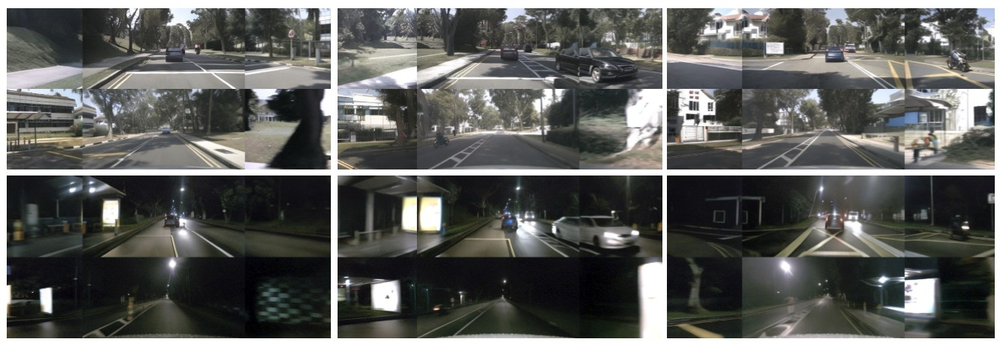
図12：明るさ変化の生成。上段は日中のシーンを示す。下段は同じレイアウトを夜間のシーンとして描画したものであり、条件付き生成の能力を示している。
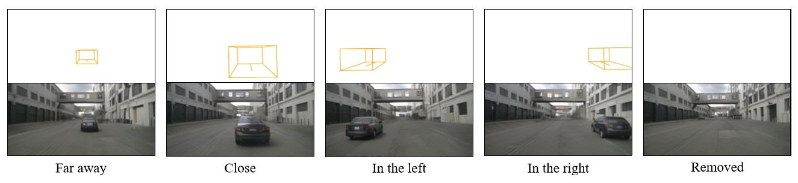
図13：前景物体のレイアウトの制御。3D ボックスの位置を変更することで、指定されたレイアウトの変化に対応する高忠実度の画像が生成される。
図中ラベル：Far away＝遠く、Close＝近く、In the left＝左側、In the right＝右側、Removed＝除去
本節では、まずデータセットの準備について述べ、次に行動ベースの生成を強化するためのデータセットのキュレーションについて紹介する。
NuScenes データセット。nuScenes データセットは 360 度全周のカメラカバレッジを提供し、現在 3D 知覚と計画のための主要なデータセットである。公式の構成に従い、700 のストリートビューシーンを学習に、150 を検証に用いる。次に、各条件の処理について紹介する。3D ボックス条件については、3D バウンディングボックスを画像平面に投影し、八角形の角点（訳注：原文は octagonal corner points。3D ボックスの 8 つの頂点を指すと思われる）を用いて物体の位置と寸法を表し、色を用いて異なるカテゴリを区別する。これにより、正確な物体の位置特定と異なる物体間の識別が保証される。HD マップ条件については、ベクトル線を画像平面に投影し、色でさまざまな種類を示す。BEV セグメンテーションについては、CVT［72］で概説された生成プロセスに従う。このプロセスは鳥瞰図のセグメンテーションマスクを生成し、シーン内のさまざまな物体と景観の分布を表す。テキスト条件については、各シーンの記述で提供される情報を精査する。計画条件については、学習には自車位置の正解の移動量を用い、推論には VAD［30］からの計画出力を用いる。これにより、モデルは正確な自車運動情報から学習し、計画された軌道と整合する予測を行うことができる。最後に、自車の行動条件については、各フレームについて車速と操舵の情報を抽出した。
Waymo Open Dataset。Waymo Open Dataset［52］は、よく知られた自動運転用の大規模データセットである。我々は「前方（front）」カメラのデータのみを用いて、768 × 512 ピクセルの画像解像度で映像モデルを学習する。マップ条件については、OpenLane［7］におけるデータ処理に従う。
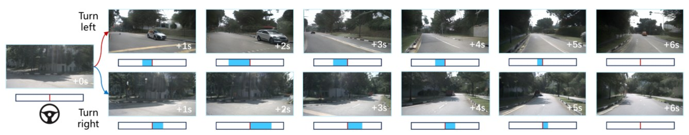
図14：多様な旋回挙動。同一の初期フレームを用いて、正の操舵角（左折を示す）と負の値（右折を示す）の系列をモデルに与える。この図は、両方の旋回挙動について一貫したストリートビューを生成するモデルの熟達度を示している。各フレームには対応する操舵角（度）を示す青いバーが添えられている。バーが長いほど操舵角が大きいことに対応する。見やすさのため、前方ビューのみを示す。
図中ラベル：Turn left＝左折、Turn right＝右折、+0s〜+6s＝開始時点からの経過時間（0〜6 秒後）
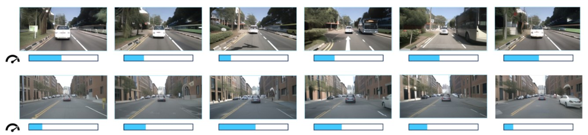
図15：多様な速度挙動。速度に関する制御性を評価するため、異なるパターンの速度信号をモデルに入力する。上の系列は自車が減速してから加速する様子を示し、下の系列はその逆の挙動を示す。これら 2 つの結果は、我々のモデルの予測の写実性を際立たせている。
nuScenes データセットにおける自車の行動の分布は大きく偏っている。すなわち、フレームの大部分は小さな操舵角（30 度未満）と 10〜20 m/s の範囲の通常の速度を示している。この偏りは、まれな操舵角と速度の組み合わせに対する汎化性の弱さにつながる。
この悪影響を緩和するため、まれな自車の行動を再サンプリングすることで学習データセットのバランスをとる。まず、各軌道をいくつかのクリップに分割し、各クリップが 1 種類の運転挙動（すなわち左折、直進、右折のいずれか）のみを示すようにする。この処理により 1048 個の固有のクリップが得られる。その後、平均操舵角と速度の組み合わせを離散化することで、これらのクリップをクラスタリングする。速度範囲 [0, 40]（m/s）は等しい長さの 10 個のビンに分割される。40 m/s を超える極端な速度は 11 番目のビンに入る。操舵角の範囲 [-150, 150]（度）は等しい長さの 30 個のビンに分割される。同様に、150 度を超える極端な角度と -150 度未満の極端な角度は、それぞれ別の 2 つのビンに入る。この分類によって得られた自車の行動の分布を図21にプロットする。
これらのクリップの行動分布のバランスをとるため、2D の 32 × 11 のグリッドの各ビンから \(N = 36\) 個のクリップをサンプリングする。\(N\) 個より多くのクリップを含むビンについては、\(N\) 個のクリップをランダムにサンプリングする。\(N\) 個より少ないクリップしか含まないビンについては、\(N\) 個のサンプルが集まるまでそれらのクリップを繰り返し用いる。その結果、7272 個のクリップが収集される。再サンプリング後の行動分布は図21に示されている。
FID と FVD の計算は、nuScenes データセットの 150 本の検証用映像クリップに対して行う。我々のモデルはマルチビュー映像を生成できるため、評価のためにそれを 6 つのビューの映像に分解する。合計 900 本の映像セグメント（約 40 フレーム）があり、VideoLDM［2］に記載された計算手順に従う。公式の UCF FVD 評価コード4を使用する。
5.1 節で述べたように、我々は生成画像のマルチビュー一貫性を測定するための KPM スコア指標を導入した。これは FID と FVD のいずれの指標でも考慮されていないものである。図22に示すように、キーポイントマッチングのプロセスを示す。青い点は画像の左右両側の重なり領域におけるキーポイントである。緑の線は、LoFTR［51］マッチングアルゴリズムを用いた、現在のビューとその 2 つの隣接ビューとの間のマッチした点である。
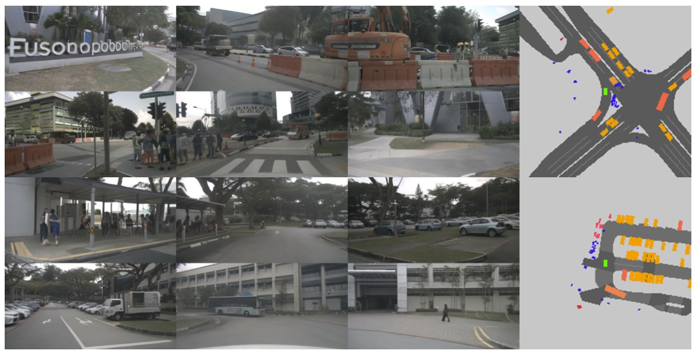
図16：歩行者の生成例。
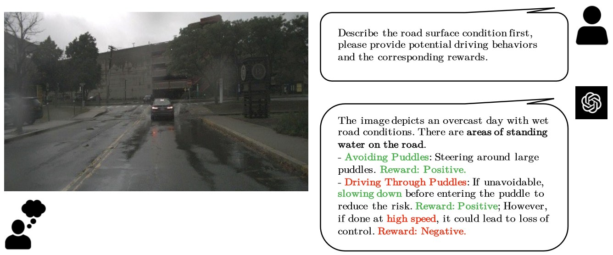
図17：報酬関数としての GPT-4V。道路前方に水たまりがあるようなケースにおいて、GPT-4V はより合理的な報酬を与えることができる。
図中ラベル（吹き出しの訳）：［ユーザ］まず路面の状態を説明し、考えられる運転挙動とそれに対応する報酬を示してください。［GPT-4V］この画像は路面が濡れた曇りの日を描いている。道路上に水たまりの領域がある。- 水たまりの回避（Avoiding Puddles）：大きな水たまりを避けて操舵する。報酬：正（Reward: Positive）。- 水たまりの通過（Driving Through Puddles）：避けられない場合は、リスクを減らすために水たまりに入る前に減速する（slowing down）。報酬：正。ただし、高速（high speed）で行うと制御を失う可能性がある。報酬：負（Reward: Negative）。
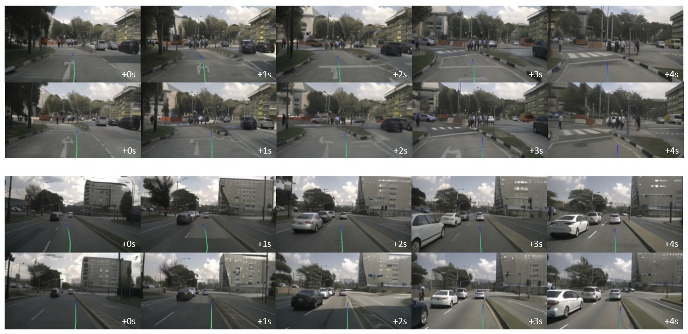
図18：通常のケースと領域外のケースにおける VAD の計画結果を示す映像。自車の位置を右に 0.5m ずらして領域外のケースを作成した。各シーンの上段：通常のデータにおける VAD 手法の妥当な軌道予測。各シーンの下段：分布外のケースに遭遇したときの不合理な軌道。
図中ラベル：+0s〜+4s＝開始時点からの経過時間（0〜4 秒後）
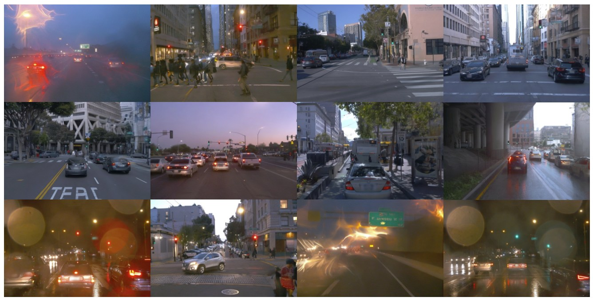
図19：Waymo Open Dataset における高解像度画像の生成。幅広い交通密度、運転シナリオ、明るさ、天候条件に対する画像生成結果を示す。
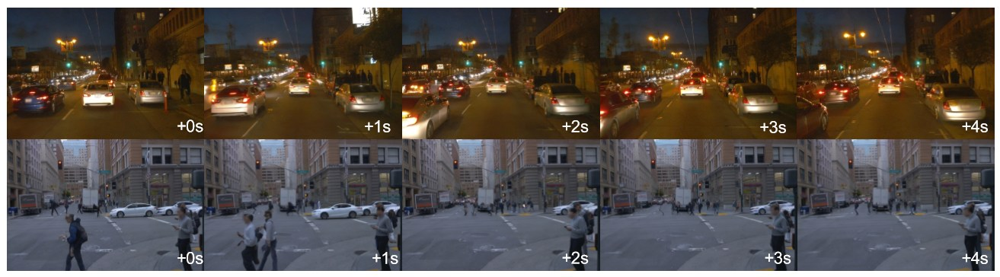
図20：Waymo Open Dataset における高解像度映像の生成。渋滞中に前方車両に密着して追従する場面（上）や、歩行者が道路を横断するのを待つ場面など、相互作用の大きい運転シナリオにおける映像生成結果を示す。
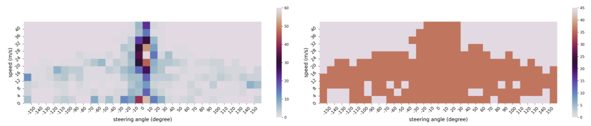
図21：再サンプリング前（左）と再サンプリング後（右）の自車の行動分布。速度と操舵角のまれな組み合わせを再サンプリングし、バランスのとれた学習データセットを得る。
図中ラベル：speed (m/s)＝速度（m/s）、steering angle (degree)＝操舵角（度）
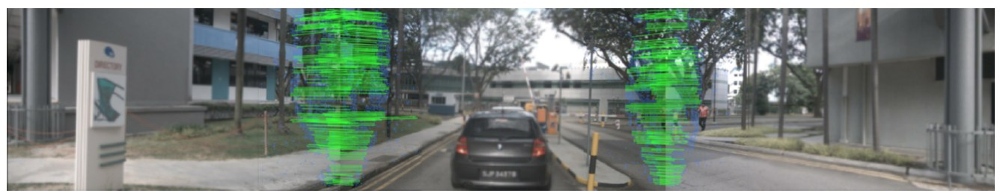
図22：KPM 計算におけるキーポイントマッチングの説明図。青い点は画像の左右両側の重なり領域における画像キーポイントである。緑の線は、LoFTR［51］マッチングアルゴリズムを用いた、現在のビューとその 2 つの隣接ビューとの間でマッチしたキーポイントである。